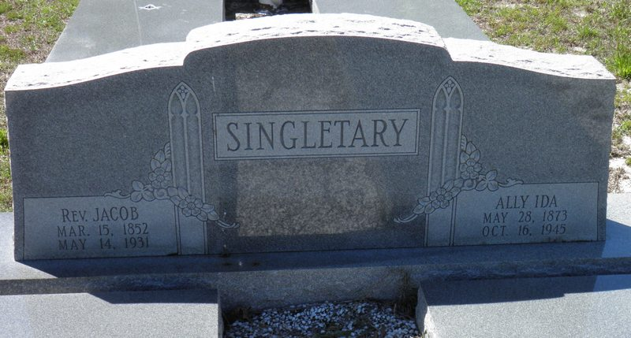

Jacob A. Singletary
1852–1931
Life Events
Born: March 15, 1852 — Bainbridge, Decatur County, Georgia
Died: May 14, 1931 — Lafayette County, Florida
Family
Father: Jacob Singletary
Mother: Eliza Singletary
Siblings
Spouse:
Children
Military Service
No military service information has been added.
Biography
Reverend Jacob A. Singletary was born on March 15, 1852, reportedly in Bainbridge, Decatur County, Georgia, the son of Jacob Singletary and Eliza Singletary. His birth date is recorded on his gravestone, while his 1931 Florida death certificate confirms March 1852, although the handwritten day is difficult to distinguish. His birthplace is specifically identified as Bainbridge, Georgia, on the June 5, 1918, World War I draft registration completed by his son, William Robert Singletary. Jacob's death certificate independently identifies Georgia as his state of birth. Although no contemporary birth record has been located, the available evidence supports Bainbridge as his probable birthplace.
Jacob's parents were living in Sumter District, South Carolina, when the 1850 United States Federal Census was recorded. By 1860, the family had relocated to Decatur County, Georgia, where Jacob appeared in his parents' household at approximately seven years of age. The family's presence in Decatur County during his childhood is consistent with the birthplace reported by his son many years later.
In the 1870 United States Federal Census, Jacob was again enumerated in Decatur County, Georgia, in the household of his father, Jacob Singletary. By 1880, the family had relocated to Lafayette County, Florida, where Jacob was recorded as twenty years old in the household headed by his mother, Eliza Singletary. His reported age in the 1880 census differs from the birth year recorded on his gravestone and death certificate.
Jacob became a Baptist minister and was identified as Reverend Jacob Singletary on his gravestone. On January 30, 1890, Elder J. A. Singletary performed the marriage ceremony of William Johnson and Sarah R. Singletary in Lafayette County, Florida. Sarah was Jacob's sister, and the officiant was probably Reverend Jacob A. Singletary, although this identification has not been conclusively established.
On April 16, 1890, Jacob A. Singletary married Ida Alla Miller in Lafayette County, Florida. Their original marriage records identify Redden B. Hill as the county judge who issued the license and D. H. Ward as the person who performed the ceremony. The marriage was filed for record on April 26, 1890. Ida was born on May 28, 1873, according to their shared gravestone. Her name appears as Ida Alla Miller in the marriage record and as Ally Ida Singletary on the gravestone.
Jacob and Ida established their family in Lafayette County, Florida, where they raised at least eight children: Eliza E. Singletary, later Eliza Bell; Sarah 'Sallie' Singletary, later Sallie Spies; William Robert Singletary (1894–1961); Emma Singletary, later Emma Evans; Henry Singletary; Giddy Singletary; Jamie Singletary; and Jasper Singletary. Their identities are supported by federal census records and the February 1961 obituary of William Robert Singletary, which identifies seven surviving brothers and sisters. The available records have not yet established complete birth and death dates for all of the children.
The 1900 United States Federal Census records Jacob and Ida living in Lafayette County with five children: Eliza E., Sarah, Robert, Emma, and Henry. Robert, later identified as William Robert Singletary, was recorded as born in May 1894. Subsequent records contain conflicting information about his birth year, including a May 3, 1897, date on his 1918 draft registration. His death certificate and gravestone record May 3, 1894.
In April 1910, Jacob and Ida were living in Precinct 1 of Lafayette County, Florida, with several of their children, including Robert, Henry, Giddy, and Jamie. The same census page also records the household of Jacob's brother, John Vershal Singletary, and his family. Their appearance on the same enumeration page suggests that the two brothers and their families continued living in the same general community, although it does not establish that their homes were immediately adjacent.
The 1920 United States Federal Census records Jacob, age sixty-eight, and Ida, age forty-six, living in Lafayette County with six children: Sallie, Robert, Henry, Jasper, Jamie, and Giddie. This census provides important evidence for the younger sons, particularly Jasper, who was subsequently identified as a surviving brother in William Robert Singletary's 1961 obituary.
By the 1930 United States Federal Census, Jacob and Ida were still living in the Day community of Lafayette County. Jacob was recorded as approximately seventy-six years old and continued working as a farmer. Their household included several adult children, among them William Robert, Henry, Jamie, and Giddie. The census recorded William Robert, Henry, and Jamie as sawmill laborers, while Giddie worked as a farm laborer. The household was enumerated on April 7, 1930, approximately thirteen months before Jacob's death.
Jacob's occupation was also recorded as farmer on his Florida death certificate. He died on May 14, 1931, in Lafayette County, Florida, at the age of seventy-nine. His death certificate records heart trouble as the cause of death. His parents' names were not provided by the informant, but their identities are established through earlier census records.
Reverend Jacob A. Singletary was buried at Bell's Mill Creek Cemetery, also known as Bethel Creek Baptist Church Cemetery, near Day in Lafayette County, Florida. His shared gravestone records his birth on March 15, 1852, and death on May 14, 1931. The same marker commemorates his wife, Ally Ida Singletary, who was born on May 28, 1873, and died on October 16, 1945.
Following Jacob's death, Ida continued living in Lafayette County. The 1940 United States Federal Census records her as a sixty-six-year-old widow living with their sons Robert, Henry, and Giddy, and their widowed daughter Sally Spies. This record documents the family's continued presence in the community nearly a decade after Jacob's death and five years before Ida's death.
Photos
No additional photographs have been added.
Grave & Burial

Bell's Mill Creek Cemetery (Bethel Creek Baptist Church Cemetery), Day, Lafayette County, Florida
Sources
-
1860 United States Federal Census — Jacob Singletary Household
Type: census1860 United States Federal Census, 19th District, Decatur County, Georgia, page 34. Jacob Singletary, age 56, and Eliza Singletary, age 34, were enumerated with Silas, Sarah, Mary, George, Harrietta, Samuel, John, and Jacob Singletary. John, age 8, and the younger Jacob, age 7, were recorded as born in Georgia. FamilySearch transcribes the surname as Singletarry. NARA publication M653.
Location: 19th District, Decatur County, Georgia
Supports: Jacob and Eliza Singletary's residence in Decatur County, Georgia, in 1860, John Singletary's presence in Jacob's household, The family's probable migration from South Carolina to Georgia, Birthplaces and reported ages of household members
-
1870 United States Federal Census — Jacob Singletary Household
Type: census1870 United States Federal Census, Jones District, Decatur County, Georgia, household 108, page 16, beginning at line 28. Jacob Singletary, age 69, was enumerated with Elizabeth Singletary, age 45, Silas, Rachel, Sarah A., Mary E., John, and Jacob Singletary. Jacob and Elizabeth were recorded as born in South Carolina. FamilySearch transcribes the surname as Singletarry. NARA publication M593.
Location: District 720, Decatur County, Georgia
Supports: Jacob Singletary's residence in Decatur County, Georgia, in 1870, Jacob Singletary's reported age and South Carolina birthplace, Elizabeth Singletary's reported age and birthplace, John Singletary's presence in Jacob's household in 1870
-
1880 United States Federal Census - Eliza Singletary Household
Type: census1880 United States Federal Census, Lafayette County, Florida, page 30, stamped page 185, lines 35-39. The household is headed by Eliza Singletary, age 54, and includes Sarah Singletary, age 24; Mary E. Singletary, age 22; John V. Singletary, age 21; and Jacob Singletary, age 20. The record documents John Vershal Singletary's residence in Lafayette County with members of his family.
Location: Lafayette County, Florida
Supports: Eliza Singletary was living in Lafayette County, Florida, in June 1880., Eliza Singletary was recorded as the head of household., Sarah Singletary, age 24, was living in Eliza's household., Mary E. Singletary, age 22, was living in Eliza's household., John V. Singletary, age 21, was living in Eliza's household., Jacob Singletary, age 20, was living in Eliza's household.
-
1890 Marriage Record of Jacob A. Singletary and Ida Alla Miller
Type: marriageOriginal marriage license and marriage certification from Lafayette County, Florida, documenting the marriage of Jacob A. Singletary and Ida Alla Miller. The marriage license was issued on April 16, 1890, by County Judge Redden B. Hill. The accompanying certification confirms that the marriage ceremony was performed on April 16, 1890, by D. H. Ward. The license was filed for record on April 26, 1890.
Location: Lafayette County, Florida
Supports: Jacob A. Singletary married Ida Alla Miller on April 16, 1890., The marriage took place in Lafayette County, Florida., The marriage license was issued April 16, 1890., The marriage ceremony was performed by D. H. Ward., The marriage license was filed for record April 26, 1890., The bride's name was recorded as Ida Alla Miller.
-
1900 United States Federal Census – Jacob A. Singletary Household
Type: censusThe 1900 United States Federal Census records Jacob Singletary and his wife Ida living in Lafayette County, Florida, with five children: Eliza E., Sarah, Robert, Emma, and Henry Singletary. Sarah's birth is recorded as August 1892, and Robert's as May 1894. Robert is identified as William Robert Singletary through subsequent records. The household provides early documentation of the children of Reverend Jacob A. Singletary and Ida Alla Miller. Later research identifies Sarah as Sarah 'Sallie' Spies, although her married surname is not recorded in this census.
Location: Lafayette County, Florida
Supports: Jacob and Ida Singletary living together in Lafayette County in 1900, Eliza E., Sarah, Robert, Emma, and Henry listed as children in the household, Sarah Singletary's birth recorded as August 1892, William Robert Singletary's birth recorded as May 1894
-
1910 United States Federal Census – Jacob A. Singletary Household
Type: censusThe 1910 United States Federal Census records Jacob Singletary and his wife Ida living in Precinct 1, Lafayette County, Florida, with six children: Sallie, Robert, Emma, Henry, Giddy, and Jamie. The household appears on lines 39–46 of Enumeration District 64, Sheet 10A. The census provides evidence of the family's continued residence in Lafayette County and identifies younger children Giddy and Jamie, who were subsequently named as surviving brothers in William Robert Singletary's 1961 obituary.
Location: Precinct 1, Lafayette County, Florida
Supports: Jacob and Ida Singletary living in Lafayette County in 1910, Sallie, Robert, Emma, Henry, Giddy, and Jamie recorded in the household, Giddy and Jamie identified as sons of Jacob and Ida, William Robert Singletary recorded as Robert in the household
-
1918 World War I Draft Registration Card of William Robert Singletary
Type: militaryWorld War I draft registration card completed June 5, 1918, for William Robert Singletary, age 21, residing in Dowling Park, Florida. The card records his birth as May 3, 1897, near Mayo, Florida, differing from the May 3, 1894, date recorded on his death certificate and gravestone. William identified Jacob Singletary as his employer and nearest relative, both associated with Dowling Park, Florida. The card records his father's birthplace as Bainbridge, Georgia. William was described as having brown eyes and brown hair, with no physical disabilities reported. Registration with the draft does not establish that he served in the military.
Location: Lafayette County, Florida
Supports: William Robert Singletary registered for the World War I draft on June 5, 1918, William reported his birth date as May 3, 1897, William resided in Dowling Park, Florida, Jacob Singletary was identified as William's employer and nearest relative, William reported his father's birthplace as Bainbridge, Georgia, William was described as having brown eyes and brown hair
-
1920 United States Federal Census – Jacob A. Singletary Household
Type: censusThe 1920 United States Federal Census records Jacob A. Singletary, age 68, and his wife Ida, age 46, living in Precinct 1, Lafayette County, Florida. Their household includes Sallie, age 23; Robert, age 22; Henry, age 20; Jasper, age 18; Jamie, age 14; and Giddie, age 8. Robert is identified as William Robert Singletary through other family records. His reported age in this census conflicts with the May 3, 1894, birth date recorded on his death certificate and gravestone. The census provides evidence of the continued residence of Jacob and Ida's family in Lafayette County and helps identify younger sons Jasper, Jamie, and Giddie, who were later named in William Robert's 1961 obituary.
Location: Precinct 1, Lafayette County, Florida
Supports: Jacob A. Singletary and Ida living in Lafayette County in 1920, Sallie, Robert, Henry, Jasper, Jamie, and Giddie recorded as children in the household, Jacob's age recorded as 68, Robert's age recorded as 22, Jamie identified as a son, age 14, Jasper and Giddie identified as sons of Jacob and Ida
-
1930 United States Federal Census – Jacob A. Singletary Household
Type: censusThe 1930 United States Federal Census records Jacob A. Singletary, age 76, and his wife Ida, age 54, living in First Precinct, Day, Lafayette County, Florida. Their household includes William R. Singletary, age 32; Henry Singletary, age 29; Jamie Singletary, age 23; Giddie Singletary, age 16; and Sallie Singletary, age 31. Jacob was recorded as a farmer. William, Henry, and Jamie worked as laborers at a sawmill, while Giddie was employed as a farm laborer. William's reported age suggests a birth around 1897–1898, conflicting with the May 1894 birth recorded in the 1900 census and the May 3, 1894, date on his death certificate and gravestone. This census documents the family shortly before Jacob's death in 1931.
Location: First Precinct, Day, Lafayette County, Florida
Supports: Jacob A. Singletary and Ida living in Lafayette County in 1930, William R., Henry, Jamie, Giddie, and Sallie recorded in the household, Jacob's occupation recorded as farmer, William, Henry, and Jamie employed as sawmill laborers, William's age recorded as 32, Continued residence of Jacob and Ida's family in Lafayette County
-
1931 Florida Death Certificate of Reverend Jacob A. Singletary
Type: deathFlorida State Board of Health death certificate for Jacob Singletary, who died May 14, 1931, in Lafayette County, Florida. His birth date is recorded as March 1852, although the handwritten day is difficult to distinguish. His gravestone identifies his birth date as March 15, 1852. The certificate identifies his wife as Ida Singletary, his occupation as farmer, and his birthplace as Georgia. His parents' names were not known to the informant. The certificate records heart trouble as the principal cause of death and identifies Bell's Mill Creek Cemetery as his burial location.
Location: Lafayette County, Florida
Supports: Jacob Singletary died May 14, 1931, in Lafayette County, Florida., His birth was recorded as March 1852., His wife was Ida Singletary., His occupation was farmer., His birthplace was recorded as Georgia., His burial location was Bell's Mill Creek Cemetery.
-
1968 Bethel Creek Baptist Cemetery Survey – Lafayette County, Florida (1968)
Type: cemeteryCemetery survey conducted in May 1968 by Moseley and Ruth Verrill at Bethel Creek Baptist Cemetery in Lafayette County, Florida. The transcription appears on pages 146–147 of a cemetery records compilation. Page 147 lists John V. Singletary with dates 1859–1911; Mary Eveline Singletary as his wife, without dates; Jessie Van Singletary and John W. Wesley Singletary without dates; Eliza Singletary as the mother of J. A. Singletary; Reverend Jacob Singletary, March 15, 1852 – May 14, 1931; Ally Ida Singletary, May 28, 1873 – October 16, 1945; and William Robert Singletary, May 3, 1894 – February 22, 1961, identified as a son of J. A. Singletary. The survey records information observed or transcribed in 1968 and does not independently establish the accuracy of all birth and death dates.
Location: Bethel Creek Baptist Cemetery, Lafayette County, Florida
Supports: John V. Singletary's gravestone was transcribed with dates 1859–1911., Mary Eveline Singletary was identified as the wife of John V. Singletary., Jessie Van Singletary was listed in the cemetery survey., John W. Wesley Singletary was listed in the cemetery survey., Eliza Singletary was identified as the mother of J. A. Singletary., Reverend Jacob Singletary's dates were recorded as March 15, 1852, and May 14, 1931., Ally Ida Singletary's dates were recorded as May 28, 1873, and October 16, 1945., William Robert Singletary was identified as a son of J. A. Singletary.